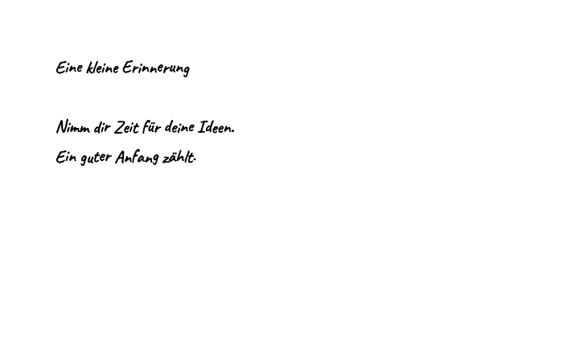
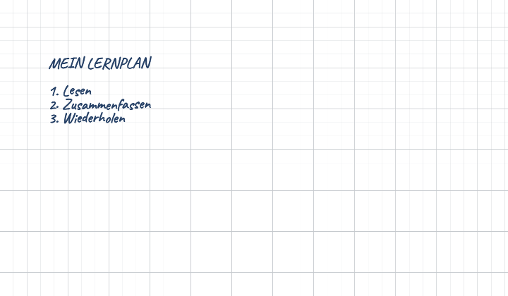
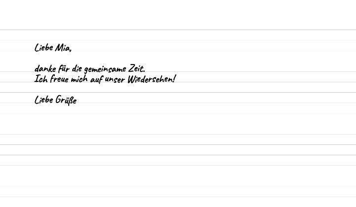

TextPen
Hier entsteht deine Handschrift.
Gib deinen Text ein oder starte mit einem Beispiel.
Eigene Handschrift
Schreibe ein a
0 VariantenWas andere sagen
Wie gefällt dir TextPen?
Tippe auf die Sterne. Das geht ohne Konto.
Drei Ideen für deinen Text
Diese Beispiele wurden mit der integrierten Beispielschrift erstellt. Eigene Buchstaben kannst du im Werkzeug ergänzen.

Eine persönliche Notiz
Leeres Papier, schwarze Beispielschrift, 24 px. Ein kurzer Gedanke für den Schreibtisch oder zum Weitergeben.
Ein übersichtlicher Lernzettel
Kariertes Papier, tintenblaue Beispielschrift, 24 px. Kurze Absätze gliedern die Lernschritte.
Ein kleiner Brief
Liniertes Papier, schwarze Beispielschrift, 24 px. Anrede, Nachricht und Gruß bekommen eigene Zeilen.Häufige Fragen
Wo werden meine Texte verarbeitet?
Text, gezeichnete Buchstaben, Papierbilder und Exporte verarbeitet das Werkzeug in deinem Browser. Du brauchst dafür keinen Upload deiner Texte.
Brauche ich ein Konto?
Nein. Du kannst sofort schreiben, gestalten und exportieren. Auch eine eigene Handschrift lässt sich ohne Anmeldung zeichnen.
Bleibt meine Arbeit gespeichert?
Standardmäßig nur in der geöffneten Seite. Über die Datenschutzeinstellungen kannst du lokale Speicherung freigeben. Nach dem Neuladen ist eine erneute Freigabe nötig, bevor gespeicherte Arbeit geladen wird. Sichere wichtige Ergebnisse zusätzlich als Datei.
Muss ich jedes Zeichen selbst zeichnen?
Nein. Fehlende eigene Zeichen ergänzt die Beispielschrift. Für zusätzliche Sprachen oder Symbole kannst du weitere Zeichen auswählen und selbst zeichnen.
Welche Dateien kann ich herunterladen?
PDF für alle Textseiten, PNG für eine ausgewählte Seite und eine JSON-Datei für deine eigenen Schriftzeichen. Die Schriftdatei enthält nicht deinen fertigen Text.
Funktioniert TextPen auf dem Handy?
Ja, im Browser. Die Vorschau folgt unter den Einstellungen. Eigene Zeichen lassen sich mit Finger oder Stift zeichnen; für längere Texte ist ein größerer Bildschirm praktischer.
Über TextPen
TextPen ist ein Browser-Werkzeug von Jarno Terfrüchte für Notizen, Lernzettel und persönliche Briefe in Handschriftoptik. Du bestimmst Schrift, Papier und Abstände und kannst eigene Zeichen hinzufügen. Die Ausgabe setzt einzelne Zeichen zusammen; sie ersetzt kein frei geschriebenes Original.
Fragen oder Fehler? Kontaktangaben stehen im Impressum, welches unter Datenschutz zu finden ist. Informationen zur lokalen Verarbeitung und geplanten Werbefinanzierung findest du im Datenschutz.